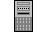
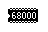
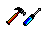

Previous
Next
TOC
Atari Prototypen (reine Entwicklungsger‰te)
Der Atari Falcon040
Die Atari Microbox
Der Atari Farbthermodrucker STC504
 ATW800
Das Innenleben der ATW800
Atari Video
Das Atari Video Computer System 2600
Computer System
Das Atari Video Computer System 5200
Das Atari Video Computer System 7800
 Das Miflgeschick
Atari Jaguar
TOS kompatible
Der IBP 190 ST
Computer
Der Eagle
Die Medusa
Der Hades
(DirecT40 und DirecT60 sind baugleich)
Der Milan
 Umbauanleitungen
Der kleine Qu‰lgeist genannt LÅEter
Zus. RS232 am MegaSTE, TT030 und Falcon030
TOS-Umschaltung im 260/520/1040/MegaST Computer
TOS-Umschaltung im 1040STE und MegaSTE Computer
TOS-Umschaltung im TT030 Computer
Falcon030 Ramkarte in einen 1040STF(M) einbauen
Wie startet der Rechner beim Einschalten
Das NV-RAM des Falcon030 und TT030
Der DD-, HD- und ED-Floppy Betrieb am Atari
Das Problem mit dem ACSI-DMA Chip
Das Iomega ZIP Laufwerk
Die Echtzeituhr im MegaSTE und TT030
weiterbl‰ttern